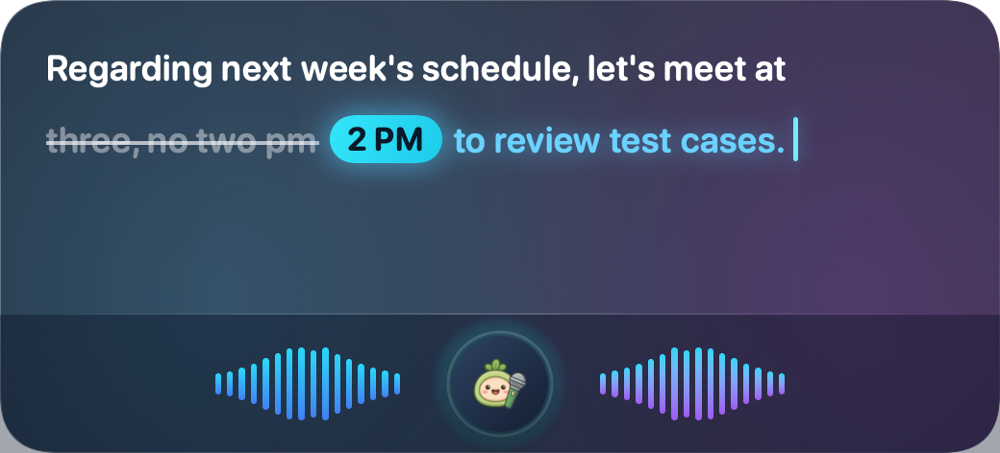

Never break your flow to type. Hold a hotkey anywhere, speak naturally, and release. On-device acoustic models and local LLMs filter filler words, fix grammar, and polish punctuation—typing clean text directly at your cursor.

All acoustic transcription and LLM refinement happen inside Apple Silicon unified memory—zero internet required, eliminating leaks from the hardware up.
Microphone streams are processed entirely in local RAM. Nothing is ever transmitted to remote cloud servers. Pull your Ethernet cable, toggle Airplane Mode—it keeps dictating.
Audio buffers are cleared immediately from memory after processing. No audio files, recordings, or cache files are ever written to your local disk.
No user accounts to register, no third-party API keys to configure, and zero per-token billing anxieties. Download and start speaking immediately.
Dictation is automatically intercepted on secure password fields to prevent credential leaks. Injections use transient clipboard markers to evade third-party clipboard scrapers.
Spoken language naturally includes filler words, false starts, and repetitions. Voice Buddy relays acoustic transcription directly to local LLMs, refining spoken phrasing into polished written prose.
“um hey David so regarding next week's release schedule let's have a quick sync at two pm and QA team please have the test cases ready that's it”
“Hey David, regarding next week's release schedule, let's have a quick sync at 2 PM, and QA team please have the test cases ready.”
4 Refinement Levels in Settings: Tailor the refinement depth anytime in Settings → General → Text Refinement: Original (Raw), Level 1: Light Polish, Level 2: Deep Optimization, or Level 3: Professional Rewrite. Compare both versions side-by-side in Results anytime!
Direct injection into the active cursor without window switching.
Slack, Notion, VS Code, Terminal, WhatsApp, or Google Docs. Wherever your cursor rests, words appear directly.
Press and hold Fn / Globe or ^⌥Space to speak freely. Supports both "Hold to Talk" and "Toggle On/Off" modes.
The moment you release, acoustic recognition and LLM refinement complete in milliseconds—typing words directly at your cursor.
Five leading on-device acoustic models optimized for diverse hardware specs and language workloads.
CoreML · 980 MB
High-precision transcription for 90+ global languages, translation, and pure English.
CoreML · 230 MB
Sub-100ms response with minimal RAM footprint for everyday chat.
MLX 8-bit · 960 MB · ~1.0 GB Unified Memory
Lightweight & fast · Best daily balance for programming, technical terms, and bilingual dictation.
MLX 8-bit · 1.7 GB · ~1.8 GB Unified Memory
Flagship accuracy · Built for long complex sentences, technical seminars, and deep code reviews.
System Native · 0 MB
macOS built-in dictation service, zero disk space, zero download needed.
On-Device Language Models: Paired with on-device Qwen LLMs (Qwen 3.5 0.8B INT5/INT8, Qwen 3 1.7B, Qwen 3 4B), providing private text restructuring and punctuation cleanup across all acoustic engines.
Transform Xiaomi Bluetooth voice remotes or Chromecast remotes into wireless virtual microphones and hotkey controllers. Lean back in your chair and trigger Voice Buddy with a single thumb click.
100% on-device inference · Absolute privacy · Zero cloud costs · Download and try today.